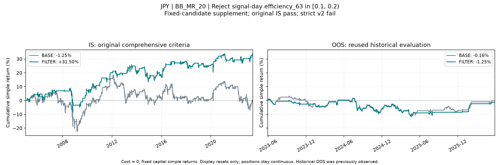

JPY 固定状态过滤：原综合标准补充评估
单一固定候选 · 成本 0 · 固定本金单利 · 已观察历史重复验证
本次补充评估状态
固定 JPY 候选的补充历史 OOS 评估已完成：预写曲线标准未通过，交易质量另行确认未通过。本候选未达到本次补充评估的预写 OOS 曲线目标。
为何单独补充
本报告只评估固定候选 JPY · BB_MR_20 · STATE_efficiency_63_1。规则参数在 C 前已经锁定；看到 C 确认结果后，按用户此前确认的原综合标准，决定只对这个原先已锁定的 JPY 候选进行单独补充验证。因此，规则锁定发生在 C 前，补充晋级决策发生在 C 后，不能将本次补充称为统计独立验证。
该候选满足用户原综合 IS 标准；严格 v2 的额外时间确认与稳健性要求仍未通过：确认期 FILTER 只有 4 笔闭合亏损交易，少于 5 笔，且 RECENT 的改善集中于最有利的前三个原始交易，去掉其贡献后改善不再为正。这些额外门槛在本补充中用于披露限制；不把严格 v2 失败改成通过，不回写严格 v2 的筛选、冻结或结论，也不会在看到本次 OOS 后改规则、改阈值或补选其他候选。
三年 OOS 是此前已经观察过的历史区间。本次运行隔离开发与评价流程，但属于历史重复验证，不能称为从未看过的新样本或新增的独立证据。
固定规则与收益口径
BASE 使用 JPY 的 BB_MR_20。每个原始交易段在其信号日检查 efficiency_63：若 0.1 ≤ efficiency_63 < 0.2，拒绝该整个原始交易段；区间外保留，特征缺失也保留。没有交易段内重新入场或根据后续收益改变拒绝条件。
固定初始本金 $100,000，成本为 0，每日收益按初始本金累加；单利年化为累计收益除以实际日历年数。信号 t → t+1 收盘执行 → t+2 首次收益。IS 为 2005-01-03—2023-05-29，历史 OOS 为 2023-05-30—2026-05-29。
主口径跨 IS/OOS 保持持仓连续。图中两个面板各自将展示的累计 PnL 归零，并使用相同纵轴尺度；不因此强制平仓。最大回撤是负 pp。胜率、盈亏比只统计在本区间内开仓并闭合的合格交易，跨界及未闭合交易的每日收益仍计入主曲线。
| 评价层次 | 条件 |
|---|---|
| 用户原综合 IS 标准 | 单利年化 ≥1%；累计相对 BASE 改善 ≥5 pp；胜率改善 ≥2 pp；盈亏比相对改善 ≥10%；收益/回撤比改善；回撤恶化 ≤2 pp；闭合 ≥50 笔、保留率 ≥50%；至少两个 IS 分段收益为正、至少两个分段改善，末段须同时为正并改善。 |
| 预写历史 OOS 曲线标准 | 单利年化 ≥1%；相对 BASE 累计改善 ≥0 pp；最大回撤 ≥-15 pp；三个周年至少 2 个正收益；闭合交易 ≥10 笔。 |
| OOS 质量另行确认 | 闭合交易至少 20 笔，且胜率与盈亏比均不低于 BASE；曲线通过与质量确认分别展示。 |
IS 与 OOS 主曲线


| 区间 | 实际起始日 | 实际结束日 | 版本 | 单利累计 | 单利年化 | 最大回撤 pp | 胜率 | 盈亏比 | 闭合笔数 | 盈利笔数 | 亏损笔数 | 闭合保留率 | 跨界交易数 | 期内开仓未平数 | 闭合少于 20 笔 |
|---|---|---|---|---|---|---|---|---|---|---|---|---|---|---|---|
| IS | 2005-01-03 | 2023-05-29 | BASE | -1.25% | -0.07% | -28.51 | 66.45% | 0.50 | 155 | 103 | 52 | 100.00% | 0 | 1 | 否 |
| IS | 2005-01-03 | 2023-05-29 | FILTER | 31.50% | 1.71% | -17.65 | 68.57% | 0.71 | 105 | 72 | 33 | 67.74% | 0 | 1 | 否 |
| OOS | 2023-05-30 | 2026-05-29 | BASE | -0.16% | -0.05% | -14.64 | 64.00% | 0.57 | 25 | 16 | 9 | 100.00% | 1 | 0 | 否 |
| OOS | 2023-05-30 | 2026-05-29 | FILTER | -1.25% | -0.42% | -13.19 | 68.42% | 0.45 | 19 | 13 | 6 | 76.00% | 1 | 0 | 是 |
预写 OOS 标准逐项结果
| 条件 | 结果 |
|---|---|
| 单利年化门槛 | 未通过 |
| 相对 BASE 的收益改善 | 未通过 |
| 最大回撤门槛 | 通过 |
| 三个周年中正收益的期数 | 通过 |
| 合格闭合交易数量 | 通过 |
| 全部预写 OOS 曲线条件 | 未通过 |
| OOS 胜率与盈亏比质量确认 | 未通过 |
未通过的曲线条件：单利年化门槛；相对 BASE 的收益改善。
质量确认不代替累计收益、回撤、分年稳定性与样本量等曲线标准。少于 20 笔闭合交易时，交易质量仍视为低样本。
全部 OOS 周年区间
按时间顺序保留三个预定周年区间及 BASE/FILTER 两个版本；这些是主 OOS 的分段诊断，不是另外三份独立样本。
| 区间 | 实际起始日 | 实际结束日 | 版本 | 单利累计 | 单利年化 | 最大回撤 pp | 胜率 | 盈亏比 | 闭合笔数 | 盈利笔数 | 亏损笔数 | 闭合保留率 | 跨界交易数 | 期内开仓未平数 | 闭合少于 20 笔 |
|---|---|---|---|---|---|---|---|---|---|---|---|---|---|---|---|
| OOS_YEAR_1 | 2023-05-30 | 2024-05-29 | BASE | 0.38% | 0.38% | -8.05 | 62.50% | 0.68 | 8 | 5 | 3 | 100.00% | 1 | 0 | 是 |
| OOS_YEAR_1 | 2023-05-30 | 2024-05-29 | FILTER | 0.03% | 0.03% | -5.98 | 66.67% | 0.56 | 6 | 4 | 2 | 75.00% | 1 | 0 | 是 |
| OOS_YEAR_2 | 2024-05-30 | 2025-05-29 | BASE | -7.82% | -7.83% | -13.19 | 55.56% | 0.40 | 9 | 5 | 4 | 100.00% | 0 | 0 | 是 |
| OOS_YEAR_2 | 2024-05-30 | 2025-05-29 | FILTER | -9.02% | -9.03% | -13.19 | 50.00% | 0.43 | 8 | 4 | 4 | 88.89% | 0 | 0 | 是 |
| OOS_YEAR_3 | 2025-05-30 | 2026-05-29 | BASE | 7.28% | 7.28% | -4.55 | 75.00% | 1.38 | 8 | 6 | 2 | 100.00% | 0 | 0 | 是 |
| OOS_YEAR_3 | 2025-05-30 | 2026-05-29 | FILTER | 7.74% | 7.75% | -2.84 | 100.00% | — | 5 | 5 | 0 | 62.50% | 0 | 0 | 是 |
Fresh-start 边界诊断
主结果连续持仓。此处另从 OOS 起点空仓开始，只接受此后新开的原始 BASE 交易段，禁止在跨界旧交易段中途重新进入。它用于显示边界假设的影响，不能用其中较好的结果替换主口径或调整门槛。
| 区间 | 实际起始日 | 实际结束日 | 版本 | 单利累计 | 单利年化 | 最大回撤 pp | 胜率 | 盈亏比 | 闭合笔数 | 盈利笔数 | 亏损笔数 | 闭合保留率 | 跨界交易数 | 期内开仓未平数 | 闭合少于 20 笔 |
|---|---|---|---|---|---|---|---|---|---|---|---|---|---|---|---|
| OOS_FRESH_START | 2023-05-30 | 2026-05-29 | BASE | 0.41% | 0.14% | -14.64 | 64.00% | 0.57 | 25 | 16 | 9 | 100.00% | 0 | 0 | 否 |
| OOS_FRESH_START | 2023-05-30 | 2026-05-29 | FILTER | -0.68% | -0.23% | -13.19 | 68.42% | 0.45 | 19 | 13 | 6 | 76.00% | 0 | 0 | 是 |
| 版本 | 连续持仓累计 | 空仓起步累计 | 空仓−连续 pp | 连续回撤 pp | 空仓回撤 pp |
|---|---|---|---|---|---|
| BASE | -0.16% | 0.41% | 0.57 | -14.64 | -14.64 |
| FILTER | -1.25% | -0.68% | 0.57 | -13.19 | -13.19 |
随本补充保存的严格 v2 诊断
以下只使用本补充目录附带的记录。总闭合交易数不等于机制实际作用的样本数；受影响交易与贡献集中度单独列示。
| 区间 | 实际起始日 | 实际结束日 | 版本 | 单利累计 | 单利年化 | 最大回撤 pp | 胜率 | 盈亏比 | 闭合笔数 | 盈利笔数 | 亏损笔数 | 闭合保留率 | 跨界交易数 | 期内开仓未平数 | 闭合少于 20 笔 |
|---|---|---|---|---|---|---|---|---|---|---|---|---|---|---|---|
| CONFIRMATION | 2020-01-01 | 2023-05-29 | BASE | -1.94% | -0.57% | -20.96 | 80.00% | 0.24 | 30 | 24 | 6 | 100.00% | 0 | 1 | 否 |
| CONFIRMATION | 2020-01-01 | 2023-05-29 | FILTER | 6.35% | 1.86% | -6.97 | 80.00% | 0.44 | 20 | 16 | 4 | 66.67% | 0 | 1 | 否 |
| 区间 | FILTER−BASE pp | 受影响闭合原始交易 | 全部受影响原始交易 | 去掉最有利 3 个后改善 pp |
|---|---|---|---|---|
| IS | 32.75 | 50 | 50 | 2.03 |
| CONFIRMATION | 8.29 | 10 | 10 | -8.04 |
| RECENT | 16.55 | 21 | 21 | -8.77 |
查看随附诊断原始记录
{
"candidate_id": "JPY|BB_MR_20|STATE_efficiency_63_1",
"notice_zh": "本目录是原综合标准下的独立补充分析，只评估事先指定、已在 v2 锁定的 JPY BB_MR_20 候选。严格 v2 仍未通过：确认期结果样本不足，近期改善在剔除最有帮助的三个原交易段后不稳健。集中度与确认期亏损笔数在此作为披露诊断，不改变 v2 结论，也不改变过滤状态或阈值。2023—2026 历史 OOS 曾在前序研究中暴露；本次不是全新、未见样本。",
"original_is_pass": true,
"strict_v2_failed": true,
"strict_v2_pass": false,
"strict_v2_frozen_candidates": 0,
"strict_v2_confirmation_failed": "outcome_sample",
"strict_v2_robustness_failed": "recent_top3_robust",
"confirmation_metrics": [
{
"candidate_id": "JPY|BB_MR_20|STATE_efficiency_63_1",
"pair": "JPY",
"strategy": "BB_MR_20",
"filter_id": "STATE_efficiency_63_1",
"filter_name": "Reject efficiency_63 state 1",
"is_new": true,
"variant": "BASE",
"split": "CONFIRMATION",
"start_date": "2020-01-01",
"end_date": "2023-05-29",
"anchor_date": "2019-12-31",
"calendar_years": 3.4086242299794662,
"observations": 889,
"gross_simple_return_pct": -1.939339913821092,
"net_simple_return_pct": -1.939339913821092,
"gross_annualized_simple_pct": -0.5689509265246215,
"net_annualized_simple_pct": -0.5689509265246215,
"gross_max_drawdown_pp": -20.9626453884616,
"net_max_drawdown_pp": -20.9626453884616,
"gross_compound_return_pct": -2.930112742311275,
"net_sharpe_252": -0.0717899489420979,
"turnover_units": 61,
"cost_drag_pp": 0.0,
"active_fraction": 0.4893138357705286,
"closed_n": 30,
"win_n": 24,
"loss_n": 6,
"flat_n": 0,
"win_rate": 0.8,
"payoff_ratio": 0.2433008716019636,
"mean_win_pct": 1.0574831678778698,
"mean_loss_abs_pct": 4.34640106677421,
"expectancy_pct": -0.0232936790525461,
"net_win_rate": 0.8,
"net_payoff_ratio": 0.2433008716019636,
"entry_n": 31,
"carry_in_n": 0,
"carry_in_net_return_pp": 0.0,
"censored_entry_n": 1,
"low_sample_flag": false,
"base_closed_n": 30,
"retention": 1.0
},
{
"candidate_id": "JPY|BB_MR_20|STATE_efficiency_63_1",
"pair": "JPY",
"strategy": "BB_MR_20",
"filter_id": "STATE_efficiency_63_1",
"filter_name": "Reject efficiency_63 state 1",
"is_new": true,
"variant": "FILTER",
"split": "CONFIRMATION",
"start_date": "2020-01-01",
"end_date": "2023-05-29",
"anchor_date": "2019-12-31",
"calendar_years": 3.4086242299794662,
"observations": 889,
"gross_simple_return_pct": 6.350153802324499,
"net_simple_return_pct": 6.350153802324499,
"gross_annualized_simple_pct": 1.862966808272308,
"net_annualized_simple_pct": 1.862966808272308,
"gross_max_drawdown_pp": -6.970640385181847,
"net_max_drawdown_pp": -6.970640385181847,
"gross_compound_return_pct": 5.958814187062034,
"net_sharpe_252": 0.3183518461825943,
"turnover_units": 41,
"cost_drag_pp": 0.0,
"active_fraction": 0.2947131608548931,
"closed_n": 20,
"win_n": 16,
"loss_n": 4,
"flat_n": 0,
"win_rate": 0.8,
"payoff_ratio": 0.4446926474854657,
"mean_win_pct": 1.0836057230192466,
"mean_loss_abs_pct": 2.4367520559346847,
"expectancy_pct": 0.3795341672284603,
"net_win_rate": 0.8,
"net_payoff_ratio": 0.4446926474854657,
"entry_n": 21,
"carry_in_n": 0,
"carry_in_net_return_pp": 0.0,
"censored_entry_n": 1,
"low_sample_flag": false,
"base_closed_n": 30,
"retention": 0.6666666666666666
}
],
"recent_metrics": [
{
"candidate_id": "JPY|BB_MR_20|STATE_efficiency_63_1",
"pair": "JPY",
"strategy": "BB_MR_20",
"filter_id": "STATE_efficiency_63_1",
"filter_name": "Reject efficiency_63 state 1",
"is_new": true,
"variant": "BASE",
"split": "RECENT",
"start_date": "2015-01-01",
"end_date": "2023-05-29",
"anchor_date": "2014-12-31",
"calendar_years": 8.407939767282683,
"observations": 2193,
"gross_simple_return_pct": -0.8153604100243794,
"net_simple_return_pct": -0.8153604100243794,
"gross_annualized_simple_pct": -0.0969750536507341,
"net_annualized_simple_pct": -0.0969750536507341,
"gross_max_drawdown_pp": -20.9626453884616,
"net_max_drawdown_pp": -20.9626453884616,
"gross_compound_return_pct": -2.8112171201993386,
"net_sharpe_252": -0.0137029069083117,
"turnover_units": 145,
"cost_drag_pp": 0.0,
"active_fraction": 0.4929320565435476,
"closed_n": 72,
"win_n": 49,
"loss_n": 23,
"flat_n": 0,
"win_rate": 0.6805555555555556,
"payoff_ratio": 0.4730361667692926,
"mean_win_pct": 1.1250094163250457,
"mean_loss_abs_pct": 2.378273576856821,
"expectancy_pct": 0.0059051268363934,
"net_win_rate": 0.6805555555555556,
"net_payoff_ratio": 0.4730361667692926,
"entry_n": 73,
"carry_in_n": 0,
"carry_in_net_return_pp": 0.0,
"censored_entry_n": 1,
"low_sample_flag": false,
"base_closed_n": 72,
"retention": 1.0
},
{
"candidate_id": "JPY|BB_MR_20|STATE_efficiency_63_1",
"pair": "JPY",
"strategy": "BB_MR_20",
"filter_id": "STATE_efficiency_63_1",
"filter_name": "Reject efficiency_63 state 1",
"is_new": true,
"variant": "FILTER",
"split": "RECENT",
"start_date": "2015-01-01",
"end_date": "2023-05-29",
"anchor_date": "2014-12-31",
"calendar_years": 8.407939767282683,
"observations": 2193,
"gross_simple_return_pct": 15.73452944405146,
"net_simple_return_pct": 15.73452944405146,
"gross_annualized_simple_pct": 1.871389410433017,
"net_annualized_simple_pct": 1.871389410433017,
"gross_max_drawdown_pp": -7.935954054230964,
"net_max_drawdown_pp": -7.935954054230964,
"gross_compound_return_pct": 15.728195749660957,
"net_sharpe_252": 0.3549848600134726,
"turnover_units": 103,
"cost_drag_pp": 0.0,
"active_fraction": 0.3182854537163703,
"closed_n": 51,
"win_n": 35,
"loss_n": 16,
"flat_n": 0,
"win_rate": 0.6862745098039216,
"payoff_ratio": 0.7758908351276026,
"mean_win_pct": 1.1805827445323296,
"mean_loss_abs_pct": 1.5215835670209603,
"expectancy_pct": 0.3328442938489444,
"net_win_rate": 0.6862745098039216,
"net_payoff_ratio": 0.7758908351276026,
"entry_n": 52,
"carry_in_n": 0,
"carry_in_net_return_pp": 0.0,
"censored_entry_n": 1,
"low_sample_flag": false,
"base_closed_n": 72,
"retention": 0.7083333333333334
}
],
"effects": {
"candidate_id": "JPY|BB_MR_20|STATE_efficiency_63_1",
"IS": {
"delta_pp": 32.747471764320075,
"changed_closed_n": 50,
"changed_episode_n": 50,
"delta_without_best3_pp": 2.0303854708761264
},
"CONFIRMATION": {
"delta_pp": 8.289493716145591,
"changed_closed_n": 10,
"changed_episode_n": 10,
"delta_without_best3_pp": -8.04190446076093
},
"RECENT": {
"delta_pp": 16.549889854075843,
"changed_closed_n": 21,
"changed_episode_n": 21,
"delta_without_best3_pp": -8.772647654244587
}
},
"diagnostic_only": true
}样本内改善的来源：三笔大亏与贡献集中
随本补充保存的 IS 观察记录显示：全 IS 的 FILTER−BASE 累计改善为 32.747 pp，其中最有利的三笔被拒原始交易贡献 30.717 pp，占净改善的 93.80%。这解释了样本内结果对少数大亏交易的依赖。
| 原始开仓日 | 原始平仓日 | 方向 | 原始交易单利 | 避开亏损贡献 pp | 持有报价日 | 入场 efficiency_63 |
|---|---|---|---|---|---|---|
| 2012-11-16 | 2013-02-26 | LONG_JPY | -12.15% | 12.15 | 72 | 0.1074 |
| 2022-03-11 | 2022-05-13 | LONG_JPY | -9.58% | 9.58 | 45 | 0.1462 |
| 2016-11-10 | 2017-01-06 | LONG_JPY | -8.99% | 8.99 | 41 | 0.1447 |
| 区间 | 净改善 pp | 前三笔贡献占净改善 | 去掉前三笔后改善 pp |
|---|---|---|---|
| IS | 32.75 | 93.80% | 2.03 |
| RECENT | 16.55 | 153.01% | -8.77 |
贡献占比可以超过 100%：这表示其余交易对改善有负贡献。按期内开平交易分组求和与连续持仓的日历区间账户收益口径不同，不能混用。上述都是 IS 事实解释，不是新的筛选条件。
待验证的机制假设
63????????20?Bollinger??????????????????????????????????????2???????????z?????????????????????
观察支持：????????????????????JPY 20??63?????????JPY?????72?45?41????????????????????????????
解释限制：?????????????E63?????????????1201?D???V???????D/V/C?????????????C????????top3?????????
后续可检验问题：??[0.1,0.2)?BB20?????????????????????????????????????5?/5?????????????????episode????????????????????payoff??????????????????????????????????
这些大亏事件说明本样本中改善来自何处；它们不能证明该 efficiency 区间能稳定预测未来亏损，也不构成因果确认。机制假设不改变本次已冻结规则或 OOS 判定。
可复核文件
这里只链接本补充目录的实际输入；不读取或改写严格 v2 或旧 OOS 产物。渲染输入哈希记于 报告 manifest。
- protocol.json
- is_selection.csv
- is_frozen_daily.csv.gz
- is_frozen_metrics.csv
- supplement_diagnostics.json
- jpy_observation_explanation.json
- oos_status.json
- oos_daily.csv.gz
- oos_metrics.csv
- candidate_assessment.csv
- oos_anniversary_metrics.csv
- oos_fresh_start_metrics.csv
查看补充协议
{
"version": "state_filter_supplement_v1",
"created_utc": "2026-10-23T05:52:54.591574+00:00",
"is_start": "2005-01-03",
"is_end": "2023-05-29",
"oos_start": "2023-05-30",
"oos_end": "2026-05-29",
"oos_duration": "Three calendar years immediately following IS, ending at the supplied workbook endpoint.",
"scope": {
"pairs": [
"JPY"
],
"strategies": [
"BB_MR_20"
],
"baseline_accounts": 1
},
"initial_capital_usd": 100000,
"accounting": "fixed_initial_capital_simple",
"cost_bp": 0.0,
"reference_cost_bp": 0.0,
"cost_instruction": "User explicitly requested no costs. No cost sensitivity is used this round.",
"carry_financing_cash_interest": 0.0,
"prior_holdout_exposure": "The three-year historical OOS was observed before v1 and evaluated by v1. V2 is a disclosed repeated historical evaluation, not independent untouched OOS.",
"development_access": "Use only independently audited, saved full-IS daily paths and metrics for the single designated candidate. No new threshold, fallback, ranking or OOS return is used for this supplemental freeze.",
"screen": {
"min_gross_annualized_simple_pct": 1.0,
"min_return_improvement_pp": 5.0,
"min_win_rate_improvement_pp": 2.0,
"min_payoff_relative_improvement": 0.1,
"max_drawdown_deterioration_pp": 2.0,
"return_to_drawdown_must_improve": true,
"min_closed_trades": 50,
"min_closed_retention": 0.5,
"min_positive_is_blocks": 2,
"min_improved_is_blocks": 2,
"last_is_block_positive_and_improved": true,
"one_way_cost_bp": 0.0,
"cost_sensitivity_evaluated": false,
"cost_instruction": "User explicitly requested no costs for this round.",
"rank": [
"gross_return_improvement_pp DESC",
"payoff_absolute_improvement DESC",
"win_rate_improvement_pp DESC",
"candidate_id ASC"
],
"freeze": "One highest IS-ranked passing NEW filter per pair/strategy. All passing versions retained in IS table.",
"schedule_delay_is_diagnostic_only": true
},
"oos_screen": {
"min_net_annualized_simple_pct": 1.0,
"min_net_return_improvement_pp": 0.0,
"worst_net_drawdown_pp": -15.0,
"min_positive_anniversary_years": 2,
"min_closed_trades": 10,
"quality_confirmation": "Separately report whether both gross trade win rate and payoff are no worse than BASE, with >=20 closed trades. Not a license to tune on OOS."
},
"is_blocks": [
[
"IS_EARLY",
"2005-01-03",
"2014-12-31"
],
[
"IS_MIDDLE",
"2015-01-01",
"2019-12-31"
],
[
"IS_LATE",
"2020-01-01",
"2023-05-29"
]
],
"oos_anniversary_years": [
[
"OOS_YEAR_1",
"2023-05-30",
"2024-05-29"
],
[
"OOS_YEAR_2",
"2024-05-30",
"2025-05-29"
],
[
"OOS_YEAR_3",
"2025-05-30",
"2026-05-29"
]
],
"candidate_specs": [
{
"id": "STATE_efficiency_63_1",
"feature": "efficiency_63",
"state": 1
}
],
"legacy_comparator_ids": [
"COMMODITY_USD",
"RATE_USD_CONFLICT"
],
"family_application": "One explicitly designated v2-locked candidate; original rule and state bin unchanged.",
"boundary_policy": "Main evaluation preserves continuous positions across IS/OOS; PnL display resets only. Quality uses entries and closes inside each interval. Carry-in and censored trades are reported separately.",
"fresh_start_sensitivity": "Zero prior positions; only original BASE episodes with execution entry on/after OOS_START may enter. No mid-episode re-entry.",
"schedule_delay_sensitivity": "No additional IS delay experiment in this supplement.",
"holdout_rule": "Freeze the sole designated original-SCREEN passer at rank 1. Evaluate it under unchanged OOS_SCREEN; retain every outcome and diagnostic. No fallback, retuning or replacement.",
"source_sha256": {
"run_filter_research.py": "b648e4043149df19dbdc48e37a65d2470f00613ffb95f2b9b3b904e024f2d7a9",
"src/fx_filter_candidates.py": "695a80f3914a2663e12859fcc2b8121106dea9859f2bb7e00f4d3c3eefde12c7",
"src/fx_filter_evaluation.py": "fb04db076d320dc21b245e5c7957d11b7448ed852656fa9a38f5a10896d099db",
"src/fx_baselines.py": "40774774f34b048480f1684ecd5913b5439f0386f73695b391e6809acce0fe97",
"src/fx_economics.py": "87314c8688d8cb52e2e637fe112f4a15124ce93ba893c7491a9b23c4114a868e",
"src/fx_observation_features.py": "a34acd39e7a86ea5770fc2b7152a703f47c47fadc795b974ce7eb11e53fdf3c3",
"run_state_filter_research.py": "8851bcd8ec23bb5bbefb0658106cad6c336337508a8ab3ebf153bbdd2319c92c",
"src/fx_is_states.py": "b14cacc51e83587dbd15514e05ff608ecb1ead4e8a875f6eab2acaf41a6d8f5b",
"src/fx_state_filters.py": "47f6c3f4b5696bb2f1039cf31b67244da5c81929e6ecbc6aa91d08e78904e619",
"run_state_filter_supplement.py": "d41bb080c576551153c676f0ea4ee330e40175f86caa706d211400dafac927bf",
"verify_state_filter_research.py": "9c24f76e55617b690bd8f39b6e0050fc4a1cbf2e393a9dee4559aa8112795f0f",
"tests/test_fx_filter_candidates.py": "6f99c024b1ddd8de619e2409d1643cf305e63f598c9c15cfa66278cd4621869f",
"tests/test_fx_filter_research.py": "44f84a791454d202e6ab4018c31852da0682ce021679b1bf5f09cb53d88a3631",
"tests/test_fx_is_states.py": "2972bc7efcfb5f7de299edc499730c2442e1f8dbd069e8fd989935a4bad87155",
"tests/test_fx_observation.py": "427ecd0b1ec334aa94cda77eae0175018f2b27d128cbaf49cdb584432cd41156",
"tests/test_fx_observation_features.py": "141a6dd4a03a5d0e8a5c2a1f4380d240496e128e52081f07c2c43dadcccaa8fd",
"tests/test_fx_state_filters.py": "0691fba82746b94cec51f209566389bfb28aaa316d9118d014e2d66f0130040e",
"tests/test_fx_state_research.py": "daad00da9ae4e07a54814f411e4e45ca01b27cba3f235da47d353e9a5c43bfac"
},
"input_sha256": {
"FX_Research_Datasets/data/raw/FX_Features_Book.xlsx": "d2ea946ad85afdfc2e790307880528e6111b51aa6be00a73d5f8d083f4a67dc9",
"FX_Research_Datasets/data/raw/FX_Technical_PIT_Dataset(6)(1).xlsx": "70283428b418ab78af49951cdecf741c7f909ffeb17dafd86aaf3d9f9107f2de",
"reproduced/filter_is_diagnostics_v2/is_entry_state_summary.csv": "3e977f3e69662b1aba5e0e9d1d1cb8af4ecabccf24dd3fa2e315c9aa5ea91b2a"
},
"state_bins": {
"vol_ratio_20_63": [
0.8,
1.0,
1.25
],
"realized_vol_20_pct": [
5.0,
10.0,
15.0
],
"efficiency_63": [
0.1,
0.2,
0.4
],
"direction_return_20_vol": [
-1.0,
0.0,
1.0
],
"direction_distance_ma_60_vol": [
-1.0,
0.0,
1.0
],
"K_vix": [
15.0,
20.0,
30.0
],
"K_vix_d5": [
-3.0,
0.0,
3.0
],
"direction_spread_bp": [
-100.0,
0.0,
100.0
],
"direction_spread_d20_bp": [
-10.0,
0.0,
10.0
],
"direction_dxy_d20_pct": [
-1.0,
0.0,
1.0
],
"direction_commodity_d20_pct": [
-1.0,
0.0,
1.0
],
"base_pnl_63_pct": [
-2.0,
0.0,
2.0
],
"base_pnl_252_pct": [
-5.0,
0.0,
5.0
]
},
"discovery": [
"DISCOVERY",
"2005-01-03",
"2014-12-31"
],
"validation": [
"VALIDATION",
"2015-01-01",
"2019-12-31"
],
"confirmation": [
"CONFIRMATION",
"2020-01-01",
"2023-05-29"
],
"observation_source_sha256": {
"reproduced/filter_is_diagnostics_v2/is_entry_state_summary.csv": "3e977f3e69662b1aba5e0e9d1d1cb8af4ecabccf24dd3fa2e315c9aa5ea91b2a"
},
"designated_candidate_id": "JPY|BB_MR_20|STATE_efficiency_63_1",
"original_search_scope": {
"pairs": [
"EUR",
"GBP",
"AUD",
"NZD",
"JPY",
"CHF",
"CAD",
"NOK",
"SEK"
],
"strategies": [
"RSI_MR_7",
"RSI_MR_14",
"RSI_MR_20",
"RSI_MOM_7",
"RSI_MOM_14",
"RSI_MOM_20",
"MA_10_30",
"MA_20_60",
"BB_MR_10",
"BB_MR_20",
"BB_BO_10",
"BB_BO_20",
"DONCHIAN_BO_10",
"DONCHIAN_BO_20",
"MACD_12_26_9",
"TSMOM_21",
"TSMOM_63",
"VOTE_EQUAL_4",
"VOTE_STRENGTH_4",
"REGIME_RULE_FIXED"
],
"baseline_accounts": 180
},
"supplement": true,
"notice_zh": "本目录是原综合标准下的独立补充分析，只评估事先指定、已在 v2 锁定的 JPY BB_MR_20 候选。严格 v2 仍未通过：确认期结果样本不足，近期改善在剔除最有帮助的三个原交易段后不稳健。集中度与确认期亏损笔数在此作为披露诊断，不改变 v2 结论，也不改变过滤状态或阈值。2023—2026 历史 OOS 曾在前序研究中暴露；本次不是全新、未见样本。",
"strict_v2_result_unchanged": true,
"strict_v2_pass": false,
"strict_v2_temporal_protocol": {
"proposal": "One fixed feature bin per candidate; UNKNOWN is never rejected. Each 2005-09/2010-14 discovery cohort has >=10 closed trades and negative sum; combined 2005-14 sum remains negative after removing its worst trade.",
"discovery": "FILTER annualized>=1%; improvement>=5pp; win rate +2pp; payoff +10%; DD deterioration<=2pp; return/DD improves; >=30 closed and >=50% retention; >=20 changed closed episodes.",
"validation": "2015-19 FILTER annualized>=1%, positive improvement and return/DD improvement; win rate/payoff no worse; >=20 closed, >=5 wins/losses, >=50% retention, >=5 changed closed episodes.",
"locking": "One candidate per pair/strategy, ranking VALIDATION annualized DESC, through-2019 return improvement DESC, candidate_id ASC. Lock before computing CONFIRMATION filtered paths; no fallback after failure.",
"confirmation": "2020-2023-05 FILTER annualized>=1%, positive improvement and return/DD improvement; quality no worse; >=20 closed with >=5 wins/losses, >=50% retention, >=5 changed closed episodes.",
"final": "All original full-IS SCREEN criteria, plus RECENT annualized>=1 and positive improvement/return-DD improvement. Full IS and RECENT delta remain positive after removing the three most helpful original episodes. >=20 full-IS changed closed episodes.",
"oos": "Only final IS-passing candidates enter the same prewritten OOS_SCREEN, with all outcomes retained. Reused historical OOS is disclosed. No OOS-based rule change or fallback."
},
"source_campaign": "reproduced/state_filter_v2",
"source_campaign_evidence_sha256": {
"reproduced/state_filter_v2/protocol.json": "1211276d44902490a873f85a207841cee03f744af6d2cbc1d35101a07341f448",
"reproduced/state_filter_v2/validation_locked.json": "7e7275701d208811fed11f4149284c229a8a188d30b399b5ddfed94cde76b839",
"reproduced/state_filter_v2/fit_status.json": "69ad8ce55140adb2ac305ab6b8d95570d0b843afb0779a642361cde6d356c8d5",
"reproduced/state_filter_v2/preconfirmation_integrity_audit.json": "ced85fa5c9df7c49b29032035fdd595fa82341db92a1076b1b1e4492a6b020b4",
"reproduced/state_filter_v2/frozen_selection.json": "069fd143beec224809a8454d477ff9dcafb5c8fe1a1c1c89a748529858b63f6c",
"reproduced/state_filter_v2/development_status.json": "43813075e6a7898e3f02006fd94df1d9d0661d212b8dad0b05928adb91b95ca0",
"reproduced/state_filter_v2/discovery_proposals.json": "856e486434ef010bed09444cac16ba33d706cff08f3f1de37da750217d1557b6",
"reproduced/state_filter_v2/confirmation_effect_evidence.json": "70792892ecd8e1c1d59b553c66dcc2a4789640b15bb9735a41960c17c58db365",
"run_filter_research.py": "b648e4043149df19dbdc48e37a65d2470f00613ffb95f2b9b3b904e024f2d7a9",
"src/fx_filter_candidates.py": "695a80f3914a2663e12859fcc2b8121106dea9859f2bb7e00f4d3c3eefde12c7",
"src/fx_filter_evaluation.py": "fb04db076d320dc21b245e5c7957d11b7448ed852656fa9a38f5a10896d099db",
"src/fx_baselines.py": "40774774f34b048480f1684ecd5913b5439f0386f73695b391e6809acce0fe97",
"src/fx_economics.py": "87314c8688d8cb52e2e637fe112f4a15124ce93ba893c7491a9b23c4114a868e",
"src/fx_observation_features.py": "a34acd39e7a86ea5770fc2b7152a703f47c47fadc795b974ce7eb11e53fdf3c3",
"run_state_filter_research.py": "8851bcd8ec23bb5bbefb0658106cad6c336337508a8ab3ebf153bbdd2319c92c",
"src/fx_is_states.py": "b14cacc51e83587dbd15514e05ff608ecb1ead4e8a875f6eab2acaf41a6d8f5b",
"src/fx_state_filters.py": "47f6c3f4b5696bb2f1039cf31b67244da5c81929e6ecbc6aa91d08e78904e619",
"FX_Research_Datasets/data/raw/FX_Features_Book.xlsx": "d2ea946ad85afdfc2e790307880528e6111b51aa6be00a73d5f8d083f4a67dc9",
"FX_Research_Datasets/data/raw/FX_Technical_PIT_Dataset(6)(1).xlsx": "70283428b418ab78af49951cdecf741c7f909ffeb17dafd86aaf3d9f9107f2de",
"reproduced/filter_is_diagnostics_v2/is_entry_state_summary.csv": "3e977f3e69662b1aba5e0e9d1d1cb8af4ecabccf24dd3fa2e315c9aa5ea91b2a",
"reproduced/state_filter_v2/fit_selection.csv": "b95622f124578882080326ad9bfde36fbf2db4ccb9040464e063e4b8cb659776",
"reproduced/state_filter_v2/fit_metrics.csv": "a1235f0e059a620042e574611eafe88d8efcb968b25fd4e2896cdfa48006919e",
"reproduced/state_filter_v2/fit_locked_daily.csv.gz": "248d65b6f3dcce55bef1c701fbaf86db7e90e0ca2593bca93faa6501141c1fcc",
"reproduced/state_filter_v2/confirmation_full_metrics.csv": "bf7667c80807496bb4c7085b13cc7250d7878a3fb3b1d95acc2d2fe4989e85b7",
"reproduced/state_filter_v2/confirmation_recent_metrics.csv": "80c058c9adfab972eb6d428f9fd90315cac8dfdc11d9ddd38f7c1eaa41880831",
"reproduced/state_filter_v2/confirmation_selection.csv": "0034f655b71c2bd3e58fa7b300d748f8d569ed79aac808443996b8dc384630d3",
"reproduced/state_filter_v2/is_frozen_daily.csv.gz": "70d1b93f983f1a89b64b97992b9ead0b175bc73fb649f5b0bf43df699ea197bc",
"reproduced/state_filter_v2/is_frozen_metrics.csv": "e54a3df4c388fabcdb7161886af42910c48895b3a588737cf1640120066f7295",
"reproduced/state_filter_v2/locked_is_daily.csv.gz": "3ef2d0da0fb18556d6707f7b98c0af329922fde4e4e066996726abc376f8885b",
"reproduced/state_filter_v2/locked_is_decisions.csv.gz": "2d79a7995c6f295081c2d2f3694fc9fed07db631e52c3cde4b49e730290796ee",
"reproduced/state_filter_v2/locked_is_trade_ledger.csv.gz": "2b0249659cc977483ac88cd49867800c19fad0fa4d5032dfe8fc8964b70609f8",
"reproduced/filter_is_diagnostics_v2/entry_state_validation.json": "2637b364492c0f6b9ba80823cd3f4fcfbef2f5ddca05584a19ab010c4c208e18",
"reproduced/filter_is_diagnostics_v2/technical_validation_amendment.json": "9b53b05bad9b78eafc75775ab7ea877aedb5ed7bcd253edbd1992d04261a7056",
"reproduced/filter_is_diagnostics_v2/is_entry_cohort_coverage.csv": "3115e6fa52bfc599a1f0ffd3ebdd1208f05a9e265cc652e172d01f80651aaa8a",
"reproduced/filter_is_diagnostics_v2/is_entry_state_ledger.csv.gz": "46718a115c30684bc4cbba1180120b1eb695a2d7c3fe2648ca259cc111f9f078",
"reproduced/state_filter_v2/independent_validation.json": "fb6d2a57a66057aad9e810b30b81a62b7654f47cc3d8b46db1d896cb9754d766"
},
"source_independent_audit": {
"status": "passed",
"checks_passed": 310,
"checks_total": 310,
"tests_run": 76
},
"supplement_reason": "Evaluate the explicitly designated, previously locked original-SCREEN passer separately. Extra v2 concentration and confirmation outcome-count gates remain disclosed diagnostics; strict v2 is not relabelled."
}